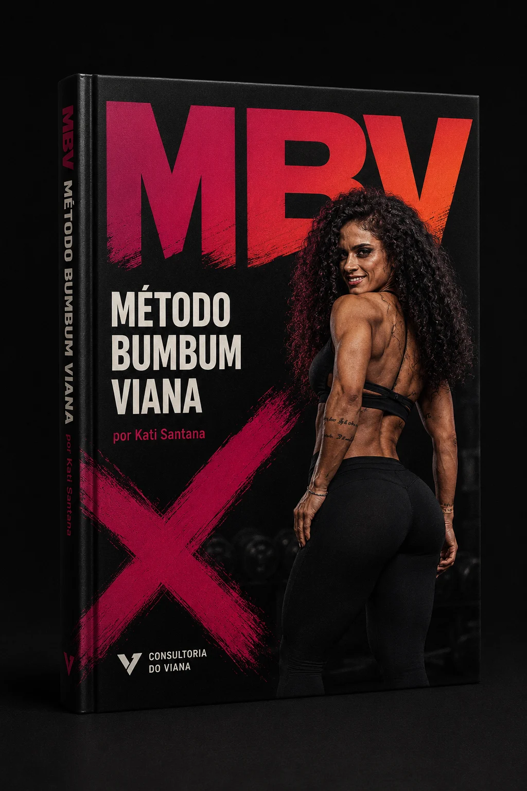
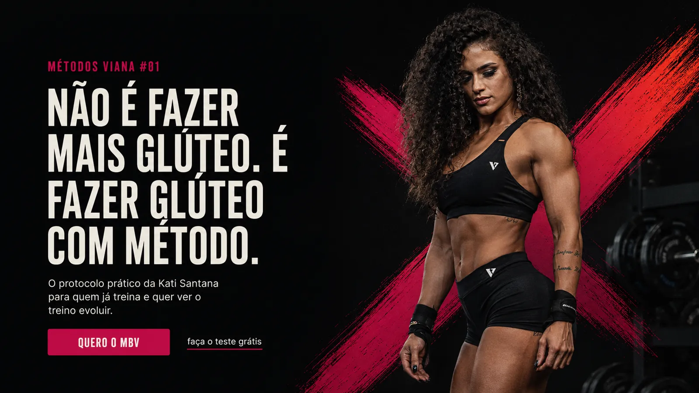
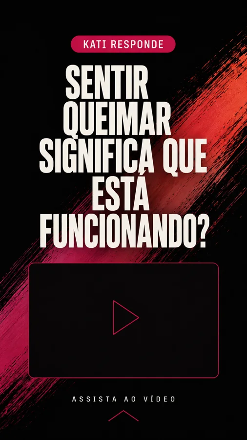
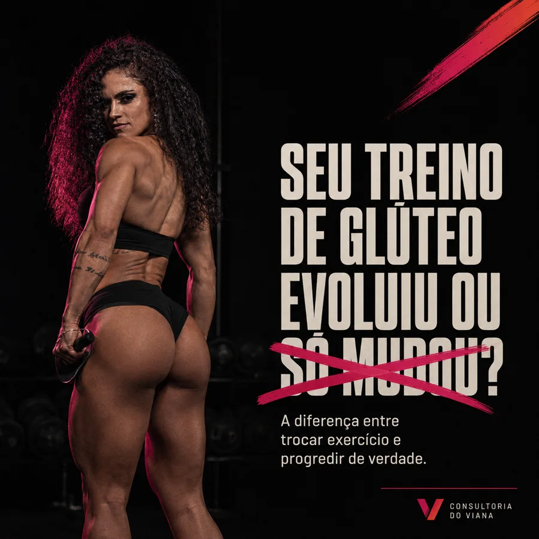
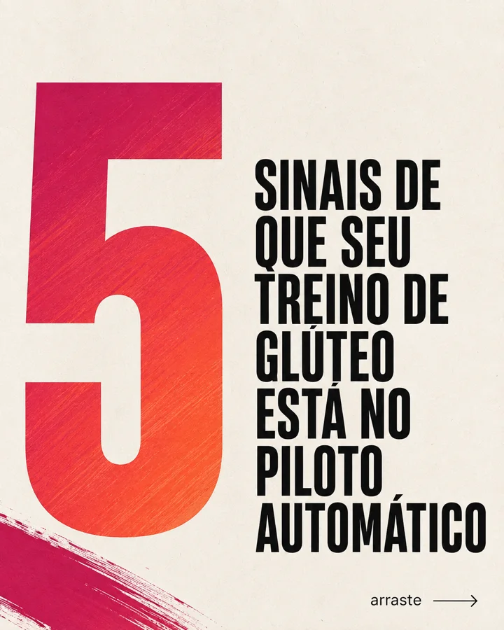

←→ navegar
Métodos Viana #01 · Plano de lançamento · Case de marketing
MBV
O Método Bumbum Viana é o primeiro produto da Consultoria assinado por uma especialista do time. Este plano cobre do produto que ainda não existe ao relatório de resultado, em dez semanas, e desenha cada peça para ser reaproveitada no próximo Método Viana.

Tela 02 · Ponto de partida
O plano não parte de um produto pronto nem de dados históricos. Parte do que existe hoje na Consultoria e do que ainda precisa ser construído.
Se o produto não existe, a primeira decisão é o que ele é.
Tela 03 · O produto
Protocolo de 8 semanas para a mulher que já treina glúteo e sente que o resultado não acompanha o esforço. O ebook organiza o método. O tracker e os vídeos fazem o método virar rotina.
8 capítulos, do diagnóstico ao protocolo em 3 versões (2, 3 ou 4 treinos por semana). A Kati escreve, o marketing estrutura.
Exercícios, volume, progressão e o que fica de fora.
Gravados no shooting day 1, dois ângulos por exercício.
Imprimível e digital. O mesmo que as alunas da Consultoria usam.
Na semana 4 a leitora sabe se está funcionando. Na 8, o que fazer depois.
Não é fazer mais glúteo. É fazer glúteo com método.
Big idea da campanhaTela 04 · Oferta e preço
R$97, ou 3x de R$32,33. A primeira compra de quem ainda não está pronta para a Consultoria, e o degrau que hoje não existe entre a Cozinha e o app.
Quando as 50 vagas acabam, o preço sobe e a página avisa. Escassez de número, não de relógio. Só para lista de espera, alunas e assinantes da Cozinha.
No lançamento e no evergreen. O que fecha em 16/11 é a aula ao vivo. Depois disso, entra a gravação. Uma diferença honesta, que a marca sustenta sem inventar prazo.
Preço e oferta definidos. Falta o tempo.
Tela 05 · Calendário
A home anuncia matrículas da próxima turma da Consultoria a partir de 7 de outubro. O MBV é produzido enquanto a turma vende e lança na terça 10/11, dia da newsletter, a tempo do verão.
Premissa: a turma fecha matrículas por volta de 20/10. Se fechar depois, o aquecimento desloca junto e o lançamento cai em 17/11, ainda antes do verão.
O tempo está definido. Agora, por onde a leitora passa.
Tela 06 · Funil integrado
Do "Comente MBV" no Instagram à oferta da turma em janeiro. A cada etapa, o CRM ganha um campo, e a base deixa de ser uma lista de e-mails.

O topo da página carrega a big idea, a assinatura da Kati e um botão só. Abaixo dele, a rota secundária para quem ainda não está pronta: "faça o teste grátis" devolve a pessoa ao diagnóstico em vez de perdê-la.
Ordem da página: promessa, para quem é e para quem não é, o que tem dentro, a Kati, depoimentos do beta, preço com os bônus, FAQ com as cinco dúvidas mais repetidas no direct, garantia de 7 dias, CTA final.
Tela 07 · Instagram
Um feed por dia útil e Stories todo dia no aquecimento. Dois feeds por dia na semana de lançamento. Produto nunca dois dias seguidos. "Comente MBV" é o único CTA do aquecimento, para a audiência aprender uma palavra só.
A marca fala sobre a Kati, nunca como ela. Na câmera, a Kati fala em primeira pessoa porque está ensinando. Na legenda, no e-mail e na newsletter, é a Consultoria falando dela. Isso preserva a autoridade dela e a voz da marca ao mesmo tempo.



Conceitos de campanha produzidos para este case, com as cores e a tipografia da marca. O gradiente magenta para coral assina o MBV e o distingue dos outros produtos do ecossistema.
Tela 08 · E-mail e push
Nutrição · gatilho: e-mail deixado no diagnóstico
Se não abriu E1 em 48 h: reenvio com outro assunto. Perfil A (menos de 6 meses de treino): recebe E0 a E3 e não recebe oferta na primeira semana.
Venda · gatilho: data
Visitou a página e não comprou: recebe V4 com a FAQ no corpo. Iniciou checkout e abandonou: e-mail 1 h depois ("ficou alguma dúvida?") e outro 24 h depois com o depoimento do beta.
Oi, Maria.
Você fez o diagnóstico há duas semanas e o seu perfil deu "piloto automático": treina há mais de um ano, troca exercício com frequência, não anota carga.
Desde então a Kati explicou por aqui o que ela olha antes de mudar um treino. Hoje isso virou produto.
O MBV, Método Bumbum Viana, é o protocolo de 8 semanas que a Kati usa com as alunas da Consultoria, organizado pra você aplicar sozinha na sua academia.
O que tem dentro:
15 alunas da Consultoria testaram a primeira versão em outubro. A Camila treinava há 3 anos e nunca tinha anotado carga. Em 5 semanas foi de 50 pra 60 kg no hip thrust, sem trocar nenhum exercício. O depoimento dela está na página.
Custa R$97, ou 3x de R$32,33. Vai com a aula da Kati pra tirar dúvida de execução e 30 dias da Cozinha do Viana. Quem entra até segunda, 16/11, assiste à aula ao vivo na quinta. Depois, fica a gravação.
Quero o MBVFicou dúvida se é pra você? Responde este e-mail. Quem responde é gente.
Consultoria do Viana
O caso da Camila é exemplo de cenário. 10 kg no hip thrust em 5 semanas é progressão comum para quem passa a registrar carga. No lançamento real, o depoimento vem do beta, com autorização escrita, e a página diz que resultado varia.
Push no app · só três momentos
Push nunca espelha e-mail. O acesso ao app está em validação com o time, então os pushes ficam condicionados ao que a plataforma permite. Se o app não permitir, o e-mail cobre.
Tela 10 · Time
Ninguém descobre no dia o que vai gravar. Ritual de 30 minutos toda quarta com a Kati, de 14/09 a 20/11: resultados da semana, dúvidas do direct, o que ela valida, o que grava na próxima.
| Frente | Kati | Marketing | Designer | Videomaker |
|---|---|---|---|---|
| Conteúdo técnico | decide | estrutura e revisa | ||
| Identidade e peças | revisa | decide e briefa | faz | |
| Vídeos de execução e Reels | grava | roteiro e pauta | capta e edita | |
| Copy: legenda, e-mail, página | revisa o técnico | escreve | ||
| Automação: ManyChat, e-mail, push | constrói e testa | |||
| Medição e relatório | recebe | mede e reporta |
Tela 11 · Métricas
| Cenários. Números fictícios, como o time autorizou. A conta é o que importa. | Conservador | Base | Ambicioso |
|---|---|---|---|
| Contas alcançadas na campanha | 40.000 | 50.000 | 65.000 |
| Diagnósticos iniciados | 1.200 | 2.000 | 3.200 |
| Leads (com e-mail) | 1.500 | 2.500 | 4.000 |
| Conversão | 4% | 7% | 10% |
| Compras | 60 | 175 | 400 |
| Lote de fundadoras (50 a R$77) | R$3.850 | R$3.850 | R$3.850 |
| Demais compras a R$97 | R$970 | R$12.125 | R$33.950 |
| Receita direta | R$4.820 | R$15.975 | R$37.800 |
| Order bump (20% a R$59) | R$708 | R$2.065 | R$4.720 |
| Alunas da Consultoria em 90 dias (5%) | 3 | 9 | 20 |
| Receita indireta (R$1.152 cada) | R$3.456 | R$10.368 | R$23.040 |
O ebook sozinho paga a produção. O valor do MBV está na segunda linha de receita e no que fica: 2.500 pessoas com perfil conhecido na base.
Tela 12 · Relatório mensal
Sai dia 30 de cada mês, uma página na frente e anexos atrás. Abaixo, a primeira página de novembro preenchida com o cenário base.
| Leads qualificados | meta 2.500 · real 2.410 |
| Conversão lead → compra | meta 7% · real 6,6% |
| Receita por lead | meta R$6,39 · real R$5,98 |
| Receita direta | meta R$15.975 · real R$14.423 |
| Ativação em 7 dias | meta 60% · real 64% |
| Reembolso | meta <3% · real 1,9% |
| Instagram + ManyChat | 1.620 leads · 98 compras |
| Newsletter | 410 · 34 |
| Blog | 190 · 11 |
| App | 120 · 12 |
| Lista de espera direta | 70 · 4 |
Melhores peças: Reel 03 (queimar), carrossel 5 sinais, chancela do Marcos. Piores: post "o que tem dentro", Stories de contagem, Reel sobre frequência.
O gargalo foi página → checkout
9% contra 12% esperado. Os leads chegaram e abriram e-mail. Na página, a dúvida mais repetida no direct foi "serve pra quem treina em casa?", e a resposta estava no rodapé. Conversão de checkout ficou em 61%, dentro da meta. O lote de fundadoras esgotou em 6 horas.
Reel 03 rodando como anúncio evergreen.
Diagnóstico aberto no direct.
Newsletter T+1 vira série mensal.
Stories de contagem regressiva.
Post de "o que tem dentro" em texto.
Push de abertura às 8h.
"Para quem é" no topo da página. Meta: 12%.
Vídeo da Kati em vez de texto na LP.
Pix com desconto de R$5.
O que este lançamento deixou para o próximo.
Tela 13 · Riscos e premissas
| Risco | Chance | Mitigação |
|---|---|---|
| A Kati tem 108 seguidores no perfil próprio | certa | O lançamento roda inteiro nos canais da Consultoria. O perfil dela cresce como efeito, não como alavanca. |
| O site não tem GA4, Pixel nem captura de e-mail | certa | Instalação na semana 1. Sem isso não existe baseline, e o plano perde a tese. |
| Acesso e recursos do app não confirmados | alta | Pushes desenhados como camada opcional. Se o app não permitir, o e-mail cobre. |
| Turma da Consultoria fecha depois de 20/10 | média | Aquecimento desloca junto. Lançamento cai em 17/11, ainda antes do verão. |
| Kati sem tempo para escrever nos prazos | média | Marketing entrevista e transcreve. Ela revisa em vez de escrever do zero. |
| Beta não gera depoimento utilizável | média | 15 alunas para garantir 5 depoimentos. Autorização por escrito no convite. |
| Reembolso acima de 3% | baixa | Página deixa claro para quem não é. Onboarding no dia 1. |
Tela 14 · O que fica
O MBV rodando evergreen a R$97.
Entre o conteúdo gratuito e a Consultoria.
2.500 pessoas com experiência, dor e objetivo conhecidos.
Captando lead todo dia, sem campanha.
Captando busca por glúteo, que hoje não existe.
O número que o próximo lançamento vai ter que bater.
Briefings, roteiro em quatro blocos, fluxo de e-mail, tracking, relatório.
E um teste respondido. O MBV é o primeiro produto da marca vendido sem o Marcos na peça. Se a conversão da tela 11 se confirmar, a Consultoria prova que o método vende pelo time, e o próximo Método Viana já tem de onde nascer: das dores mais frequentes do diagnóstico, não de uma reunião.
O que vem depois, a arquitetura do ecossistema inteiro, está no case Guarda-chuva Viana, preparado em setembro como leitura complementar.